Inhabitants of Life
Still lives – These patterns are distinguishable by a simple feature – they remain the same from one generation to another. In a sense they are oscillators with period 1. Small still lives, such as the block, often occur naturally in the evolution of a random pattern, and form the main part of what remains after changes “die out”.
Finding new, ever more elaborate still lives can be an interesting puzzle, undertaken by many enthusiasts, starting from Life’s creator, John Conway, who computed all possible still lives between 4 and 7 cells. With the advent of increasingly powerful personal computers, it became possible to do exhaustive searches in larger spaces. For example, Mark Niemiec created a list of all possible still lives between 15 and 24 cells.
What are still lives good for, other than sitting there and looking pretty? A special subcategory, the eaters, has a crucial role in creating logic circuits, by absorbing gliders and other objects. For more on this subject, see the Constructs section.
| Block | The block is the most common-occurring still life – it will form a substantial part of “ash” – the debris left behind by changing patterns. At 4 cells, it is tied with the tub as the smallest still life. |
|
|---|---|---|
| 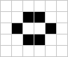 | Beehive | Another common still life, it is produced by the queen bee shuttle, a component of the basic glider gun. |
| 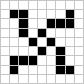 | Spiral | The spiral, consisting of a tub and four tails, has the remarkable property of quarter-rotation symmetry. |
Oscillators - Oscillators are patterns that are their own predecessors. They range from repeating themselves every two generations (period-2), to very long cycles (period-15 and more). All glider guns, for example, contain oscillators.
| Blinker | The blinker, a period-2 oscillator, is the most common naturally occurring pattern in the Game of Life. |
|
|---|---|---|
| Toad | The toad is the second most common naturally occurring oscillator. When arranged in pairs, it can eat various patterns such as middle and heavy-weight spaceships. Such a pair is called “killer toads”. |
|
 |
Pentadecathlon | This period-15 oscillator is formed from a row of 10 cells, and has various uses, most notably as a glider reflector. |
| 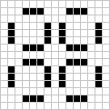 | Pulsar | This is one of the most beautiful oscillators, comprised from 4 symmetric quarters, which can be isolated using special techniques and attached to other oscillators. |
| 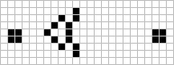 | P30 | Formed by stabilizing a queen bee shuttle with two blocks, this oscillator is the precursor of the glider gun, and thus vital to what has come to be known as “p-30 technology”. |
Gliders / Spaceships - These are objects that travel from one place to the other. Their speed cannon exceed the “speed of light” - c, one square per generation.
 |
Basic Glider | The first moving pattern to be discovered, the glider travels diagonally and almost always appears in the evolution of random patterns. |
|---|
| 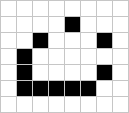 | 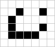 | 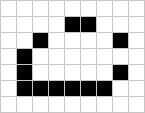 | Space Ships Besides the glider, there are various other spaceships. The most common are the Lightweight, Middleweight and Heavyweight spaceships, which are similar apart from their size. They all travel at c/2 orthogonally. |
Methuselahs - These are small patterns that evolve into large clusters which take many generations to stabilize. For a while, they look like the will live forever, hence the name.
| R-Pentomino | This small pattern only stabilizes after 1103 generations. The first glider to be observed came from the study of this pattern’s evolution. |
|
|---|---|---|
| 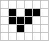 | B-Heptomino | Although this pattern has a shorter lifespan, 148 generations, it is very important in the construction of “B-Tracks”(discovered by David Buckingham), made of conduits which transport objects from one place to the other, without being damaged themselved. |
Constructs - This group includes patterns from all the other categories, but focuses on the ones created and/or used by humans with specific purposes in mind. They are akin to functional blocks in hardware design: by combining them, we can create systems of arbitrary complexity, which can ultimately perform a huge variety of computations.
| Eaters
These still lives have the property of absorbing other patterns (often gliders), ideally without being destroyed in the process. They can be used to block glider streams and to contain the various by-products of other constructs. |
||
| Fishhook | This is the first eater to be discovered. It can absorb an incoming glider and recover in only four generations. It is also capable of eating a variety of other patterns, like other spaceships. |
|
|---|---|---|
| Guns
Guns are constructs that periodically emit spaceships, usually gliders. They form the backbone of any logical system. By shooting a constant stream of gliders, a gun can be akin to the VCC in hardware. |
||
| 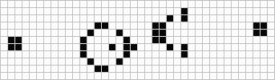 | Basic Glider Gun | The origin of this gun is, like many innovations, a challenge. It was created by Bill Gosper in 1970, disproving Conway’s conjecture that no pattern can exhibit infinite growth. |
| 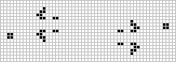 | BI-Gun | This is a double-barreled version of the gun, courtesy of the same Bill Gosper |
| Puffers
Puffers are moving objects which leave a trail of “debris” in their way. |
||
| 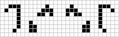 | Puffer-1 | The puffer-1 was the first ever to be discovered, and it leaves behind trails of blinkers. |
| 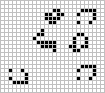 | Space Rake | The Space Rake leaves behind a trail of gliders instead of oscillators and still lives. |
| 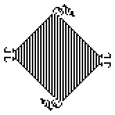 | Spacefiller | A Spacefiller is a special pattern discovered using computerized search, it expands forever, filling the universe with a stripe pattern. “Max”, pictured to the left, discovered by Tim Coe, is the smallest ever known. |